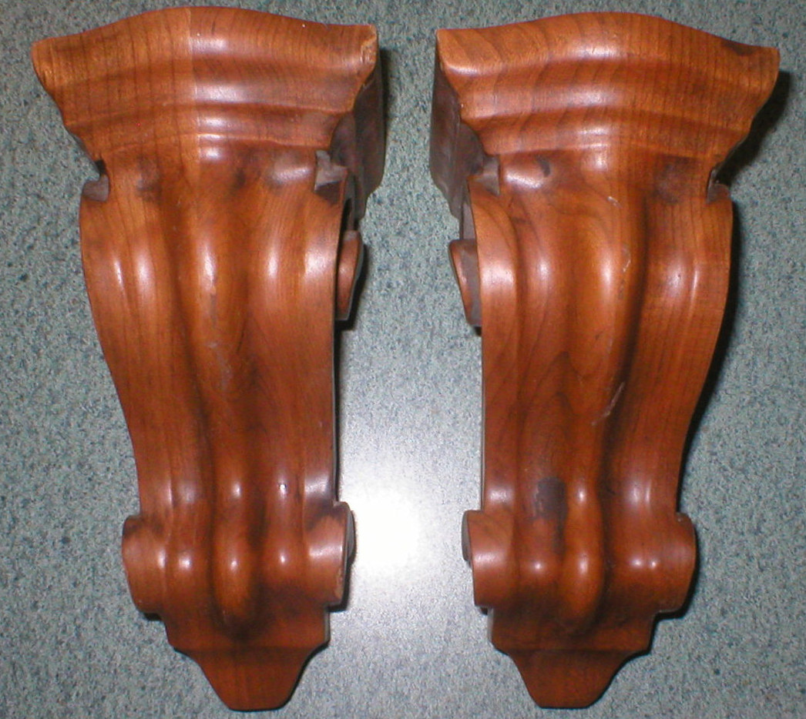
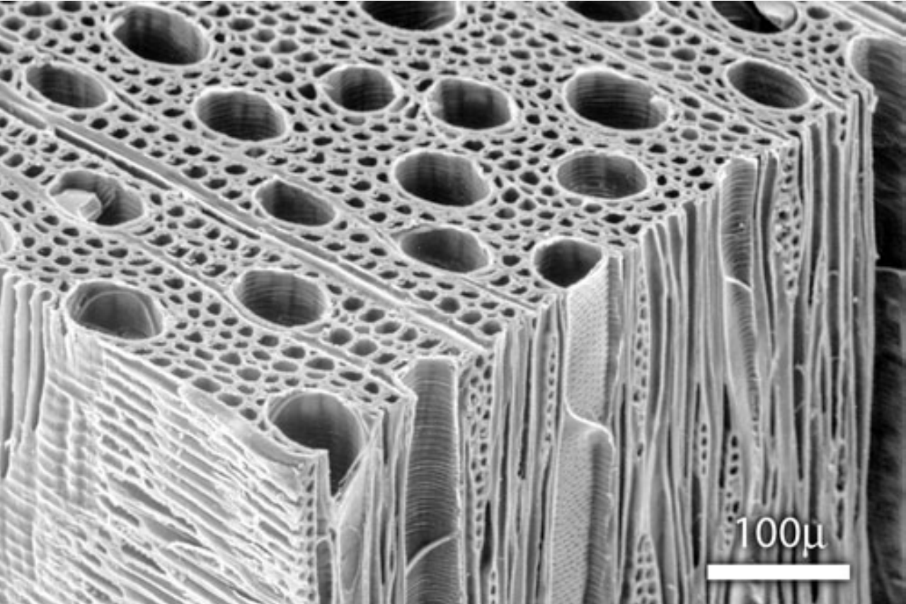
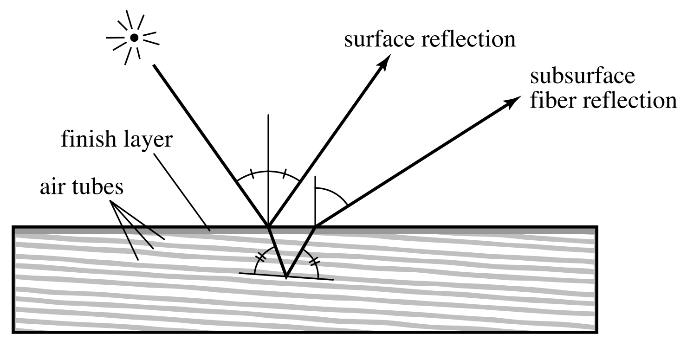
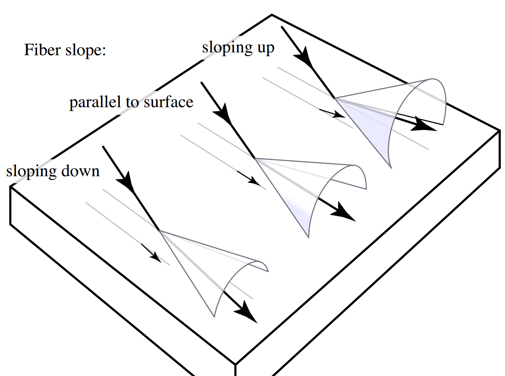
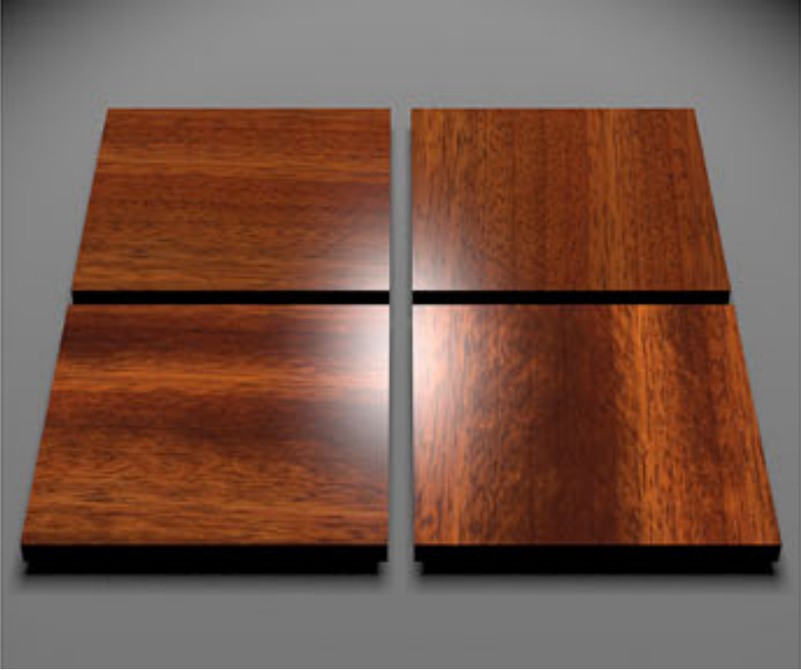
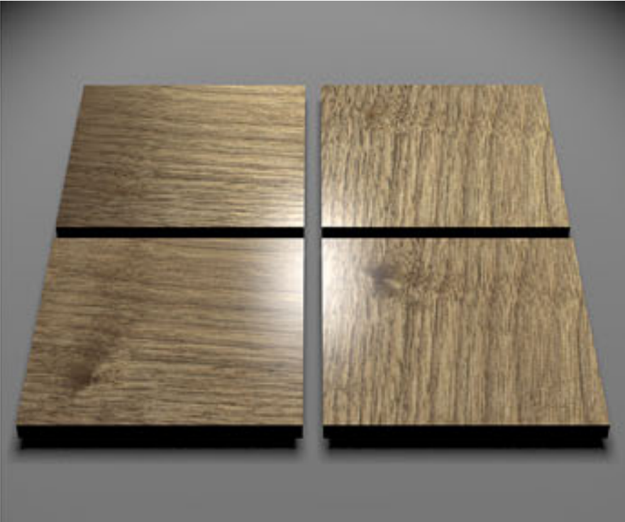
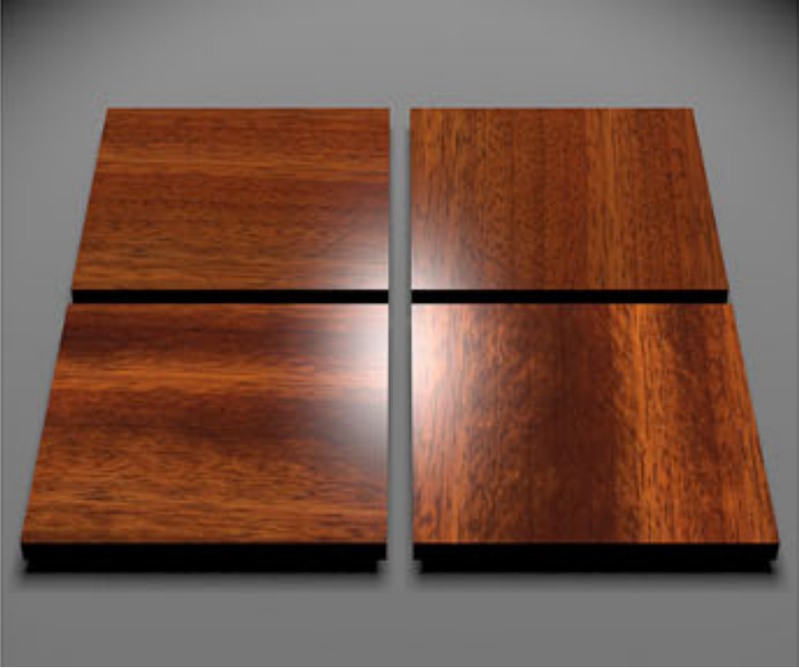
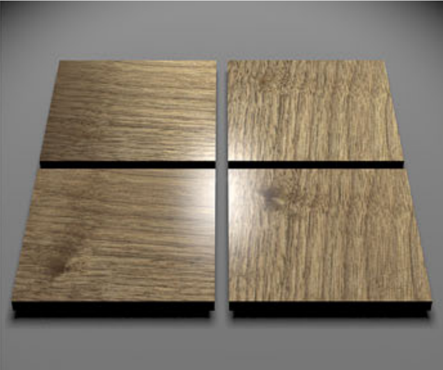

Modeling the Appearance of Finished Wood
by Sean McKenna
original paper by Marschner et al.
finished wood

features of wood

like birds-eye, burl, tiger, etc.
wood fibers

electron micrograph of wood
fibers and wood are anisotropic
modeling the BRDF

bidirectional reflectance distribution function (BRDF)
sub-surface highlight
// blur the highlight along a Gaussian distribution
float spread = exp(-pow(psiH / beta, 2) / 2.0) / sqrt2pi / beta;

revolving wood

interactive wood shader
image comparison


future work
- emulate the paper
- surface reflection highlight
- real world-comparison
references
 



Measuring and Modeling the Appearance of Finished Wood
Stephen R. Marschner, Stephen H. Westin, Adam Arbree, and Jonathan T. Moon
in Proceedings of SIGGRAPH 2005
held in Los Angeles, California, July 2005